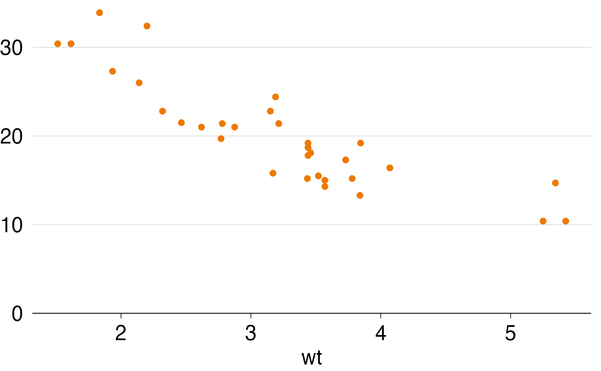

grattan_axes.RdEnsure your y- and x-axis are Grattan style guide-consistent and doesn't hang off the edge of the chart.
grattan_y_continuous(expand_bottom = 0, expand_top = 0.015, ...)
scale_y_continuous_grattan(expand_bottom = 0, expand_top = 0.015, ...)
grattan_x_continuous(expand_left = 0, expand_right = 0.015, ...)
scale_x_continuous_grattan(expand_left = 0, expand_right = 0.015, ...)default is 0. This will ensure that your x-axis is at the bottom value of your plotted data. Increase to add some buffer between the lowest point in your data and the x-axis. Note that the value is interpreted as a fraction of the total plotting space - a value of 1 will add white space equal to the whole area of your data.
default is 0.015. This will ensure that a small amount of white space is added to the top of your chart. Increase to add more white space.
arguments passed to scale_y_continuous or scale_x_continuous
default is 0. This will ensure your y-axis is at the lowest value of your plotted value.
default is 0.015. This will ensure that a small amount of white space is added to the right of your chart.
# Here's a basic chart in the Grattan style:
library(ggplot2)
p <- ggplot(mtcars, aes(x = wt, y = mpg)) +
geom_point() +
theme_grattan()
p
# In the example above, the top label on the y-axis is hanging off the top.
# To fix:
p <- ggplot(mtcars, aes(x = wt, y = mpg)) +
geom_point() +
grattan_y_continuous() +
theme_grattan()
p
# Now the top of the chart looks fine, but the bottom has two points
# (at the lower right) that are partially obscured.
# We could fix this by doing:
p <- ggplot(mtcars, aes(x = wt, y = mpg)) +
geom_point() +
grattan_y_continuous(expand_bottom = 0.015) +
theme_grattan()
p
# Alternatively, set the limits of the chart (in this example we'll set
# the lower limit to 0, but you could use some other value
# like 10 in this case).Note that by setting the second value of limits
# to NA, we're telling ggplot2 to calculate theupper limit as usual based
# on the data. All the usual arguments of `scale_y_continuous()`
# (limits, breaks, labels, etc.) can be used.
p <- ggplot(mtcars, aes(x = wt, y = mpg)) +
geom_point() +
grattan_y_continuous(limits = c(0, NA)) +
theme_grattan()
p
